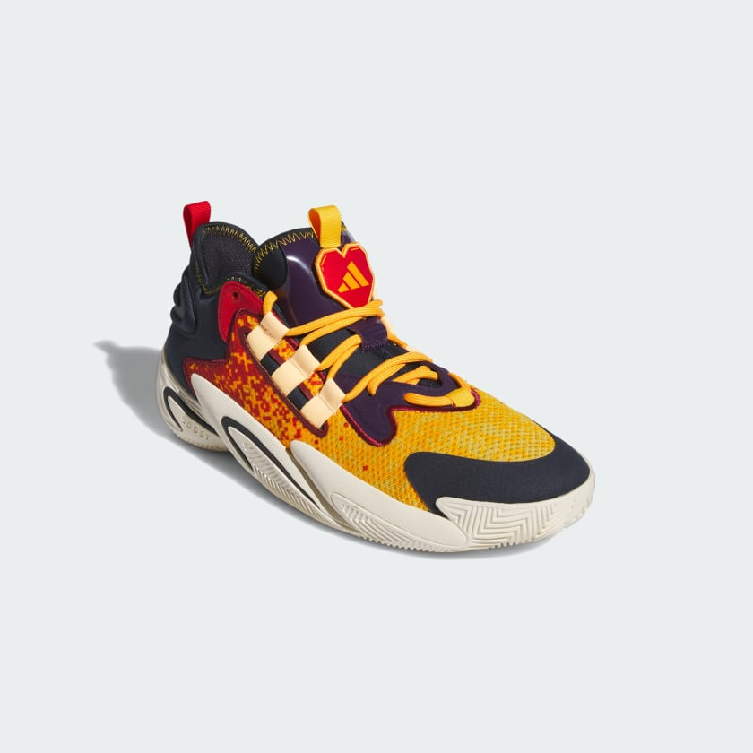

|  | Shoe Background:These low-profile basketball shoes from adidas provide elevated comfort and style to your on-court look. With an energy-returning BOOST midsole, every step toward the rack is super charged. The textile upper is durable so you can wear these shoes all season long, while the rubber outsole keeps your grip secure for much-needed support. Color Style:-Collegiate Gold / Acid Orange / Legend Ink If you want to buy this Item Just go to:Addidas Philippines |